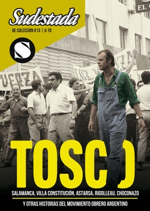

Buscar
TOSCO. Diccionario gringo
Definiciones, recuerdos, opiniones y comentarios del dirigente sindical a lo largo de una vida marcada por el compromiso con la clase trabajadora. Un diccionario a la medida de Agustín Tosco: un muestrario de sus certezas, una galería de personajes de su tiempo, una colección de caracterizaciones y una ventana abierta a la mirada crítica del Gringo.
Edición Especial N° 13
TOSCO y el sindicalismo combativo
Sudestada de Colección
Comprar edición impresaSumario
- TOSCO. Diccionario gringo
- Un rompecabezas en clave naranja
- “Resonará su voz hasta el confín de los tiempos”
- René Salamanca. Una huella clasista
Compartir Articulo
A
Ajedrez
"Hubiera querido hacerte un regalo grande y hermoso, el que más te gustara. Como me han despedido del trabajo no cobro sueldo; como me persigue la policía y me han amenazado las Tres A, vivo de la solidaridad económica y del amparo de mis compañeros. Estoy ajustado a ciertas privaciones, pero no podía olvidarme de ti. He hecho comprar un juego de ajedrez y te lo envío como presente de cumpleaños… Ese juego de ajedrez, si lo aprendes, te será muy útil. Se dice que es un 'juego ciencia', porque en la elaboración de las jugadas hay que pensar, prever las jugadas contrarias, darse un plan, readaptarse a situaciones no previstas, reemplazar el proyecto original. Este juego entrena la memoria porque es preciso retener muchas jugadas, ayuda a ser paciente y a ser tenaz… Si la suerte nos acompaña, tal vez no pase mucho tiempo en que podamos entablar una partida, que así se llama jugar al ajedrez. En fin, espero que te guste, ese es mi deseo".
(Carta a su hijo Héctor, 23 de junio de 1975, desde la clandestinidad)
Amanecer
"La revolución cubana ha sido y es el faro que ilumina el camino que lleva al futuro socialista de todos los pueblos de América. Es el ejemplo heroico de lucha y resistencia ante el imperialismo opresor de todas las naciones latinoamericanas. Es el amanecer victorioso en este continente de las ideas y concepciones auténticamente revolucionarias llevadas hasta sus últimas consecuencias".
(Carta de saludo, 24 de mayo de 1973)
Amarillo
"Ese amarillo y traidor de Rucci tuvo la desvergüenza de afirmar que la prisión nos 'promocionaba' a Ongaro y a mí. ¿Por qué no se 'promociona' él así, en lugar de hacerlo entre gallos y medianoche, en Olivos o en la Casa Rosada?".
(Entrevista con revista Imagen, 13 de octubre de 1972)
Aspiración
"Poder estar en la construcción concreta de la nueva sociedad a que aspiramos. Ver que tomamos el camino de las grandes soluciones para nuestro pueblo sería, para mí, la máxima aspiración".
(Entrevista con Siete Días Ilustrada, 5 de marzo de 1973)
Auténtico
"A mí no me preocupa que me definan, que me constriñan a vivir encasillado todas esas personas que simplifican a extremos ridículos los actos de los hombres. En definitiva es la propia clase trabajadora la que debe definir mi conducta: si estoy en la defensa de sus intereses, que son los del país, y si soy auténtico como dirigente. Hace rato que dicen muchas cosas sobre mí y lo seguirán diciendo. Pero son mis compañeros de Luz y Fuerza los que me secundan y alientan a seguir en la lucha. Aquí en Luz y Fuerza tenemos elecciones cada dos años, de manera que son los afiliados los que deciden si Tosco es auténtico como dirigente, si realmente lucho por la justicia social. Además, en las bases hay reales coincidencias: peronistas y radicales, por ejemplo, persiguen objetivos políticos idénticos; existe, por lo menos en Córdoba, la polarización que tanto preocupa a la oligarquía".
(Entrevista con revista Análisis, 16 de enero de 1970)
B
Burócrata
"La burocracia sindical es el ejercicio de los cargos sindicales con el criterio de reducir todo el sindicalismo a la tarea de administrar desde posiciones del poder los beneficios sociales, de discutir los convenios colectivos de trabajo, del quedarse gobernando al movimiento obrero desde posiciones administrativas. Es decir, no asumir la lucha del movimiento obrero como factor de liberación nacional y social. Hay que distinguir entre aquellos que se quedan para repartir lo que hay en los sindicatos y los que luchan desde adentro del sindicato por las reivindicaciones inmediatas y, a su vez, levantan la lucha permanente por esas reivindicaciones nacionales, por esas otras reivindicaciones latinoamericanas que hacen al cambio fundamental en la lucha con los compañeros. Eso es ser representante sindical y no simplemente burócrata".
(Intervención durante el debate televisivo con José Rucci, en Las dos campanas, 13 de febrero de 1973)
C
Candidatura
"Agradezco públicamente la confianza que se ha tenido en mí al ofrecerme ser candidato de los obreros y de sectores de nuestro pueblo. Es un honor proletario, popular y argentino, que no olvidaré jamás. Que me compromete aún más a servir con firmeza, perseverancia y lealtad insobornable, desde cualquier posición y en todo terreno, a la gran causa de la liberación nacional y social Argentina y latinoamericana. Estamos construyendo el futuro y el mismo debe hacerse por sobre todas las cosas con unidad, combatividad e inteligencia. En eso estamos y estaremos. Nada detendrá a nuestra clase y a nuestro pueblo en el camino que se ha trazado. Más allá de esta coyuntura electoral, en la cual declino toda candidatura, continuaremos la lucha por los derechos de la clase trabajadora y del pueblo".
(Carta de rechazo a la candidatura electoral, 16 de agosto de 1973)
Compañera
"Nosotros los trabajadores, hombres y mujeres, jóvenes y viejos, de distinta actividad y militancia, junto a los demás sectores populares, que queremos la unidad de acción, que practicamos la unidad en la lucha, que recibimos y brindamos una solidaridad combativa, iremos logrando paso a paso esa coordinación de esfuerzos, esa identidad de objetivos, que inexorablemente nos llevarán al triunfo. Usted, querida compañera, es un elocuente ejemplo de la mujer que lucha y se sacrifica por ese ideal común. Le pido que me sienta junto a usted, cerca de su corazón, rindiéndole el reconocimiento de firme y abnegada luchadora".
(Carta a una compañera, desde la cárcel de Devoto, 28 de octubre de 1971)
Córdoba
"Históricamente, Córdoba representa en forma genuina los intereses del interior frente a la hegemonía portuaria. Si en el siglo pasado se encuentra en contradicción con Buenos Aires, por su ubicación geográfica, por su concentración humana, por su grado de desarrollo, más tarde el movimiento obrero inserto en este contexto habría de asumir un papel esencial en la lucha contra la burocracia, que es una expresión más del centralismo porteño. Sobre todo a partir de 1966 comienzan a percibirse los síntomas de la explosión que estallaría tres años después, con el Cordobazo. Las reivindicaciones del proletariado demuestran que había adquirido conciencia de la realidad de su progreso, y que desconocía a las direcciones nacionales conciliadoras. Esta radicalización se vincula, sin duda, con la influencia ideológica que este proletariado recibe de su estrecho contacto con la Universidad, con los estudiantes. Y no solamente el proletariado, sino el conjunto de los sectores populares".
(Entrevista en Panorama, noviembre de 1973)
Cordobazo
"Hemos visto y vivido lo que sucedió en Córdoba. Hemos visto a miles y miles de hombres, mujeres y jóvenes que, sin temer, salieron a la calle a gritar su vibrante protesta. Hemos visto verdaderas mareas humanas que reclamaban justicia, libertad y democracia, los hemos visto actuar con valor, decisión y firmeza incomparables... ¿Qué exigía ese Pueblo en lucha? Exigía respeto a su soberana voluntad; exigía la normalización institucional, para que el Gobierno fuera elegido por decisión de la mayoría de la población, sin persecuciones para con las ideas y doctrinas de ningún argentino. Exigía que se aumentaran los salarios en un 40 por ciento, que era lo que había crecido el costo de la vida. Exigía el respeto al derecho de asociación, reunión y libre expresión. Exigía la defensa del patrimonio nacional, absorbido, cada vez más, por los monopolios extranjeros. Exigía la creación de nuevas fuentes de trabajo, para eliminar la desocupación que trae miseria y desesperación a los hogares. Exigía la reincorporación de los cesantes y el levantamiento de las sanciones por haber hecho uso del derecho constitucional de huelga. Exigía la anulación de la política de racionalización en las empresas del Estado y del desconocimiento de derechos contractuales de las empresas privadas. Exigía una Universidad abierta a las posibilidades de los hijos de los trabajadores y consustanciada con los intereses del país. Exigía la eliminación de las quitas zonales, que reducen las remuneraciones de los obreros por el sólo hecho de vivir en el interior del país. Exigía la restitución del sábado inglés... Todas estas cosas y muchas más, exigía el pueblo, cansado de peticionar ante los sordos oídos del Gobierno. Cansado de que se prohibieran y disolvieran violentamente sus actos y manifestaciones. Cansado de ser atropellado y escarnecido".
(Nota en el Electrum, 13 de julio de 1969)
Críticas
"Luchamos todos los días por resolver los problemas que en particular hacen a las crisis del sistema, en particular y en general, allí donde está la acción revolucionaria. Yo no reniego, pero no hago una bandera fácil de la posibilidad de ser revolucionario. Lo que nosotros decimos es que luchando concretamente por la solución de los problemas, no quedándonos quietos, le creamos problemas a la dictadura. O sea que creemos que tanto nosotros como otros grupos que actúan en otros terrenos estamos planteando opciones de fondo. Nosotros estamos en el campo sindical y tenemos más de 70 presos en tres años. Hay muertos y heridos en manifestaciones que pertenecen a nuestro sindicato. En la reunión que el régimen no nos permitió hacer –por miedo– pensábamos proponer paros activos. Ahora bien: ¿eso es contrarrevolucionario? ¿Eso es anti-popular?".
(Entrevista en Cristianismo y Revolución, 4 de abril de 1970)
La nota completa en la edición gráfica de Sudestada de colección Nº 13
Comentarios

Sudestada
El colectivo de Revista Sudestada esta integrado por Ignacio Portela, Hugo Montero, Walter Marini, Leandro Albani, Martín Latorraca, Pablo Fernández y Repo Bandini.
Articulos más vistos


LIBRERÍA SUDESTADA

Colección infantil

Distribuidora de Libros

Suscripción

Sudestada en URUGUAY

Otros articulos de esta edición
 SMATA
SMATA
René Salamanca. Una huella clasista
Fue el dirigente clasista más importante del gremio metalúrgico. En un extraordinario proceso unitario y combativo, consiguió torcerle el brazo ...
“Resonará su voz hasta el confín de los tiempos”
Es el responsable de Tosco. Grito de piedra, la película documental que mejor define la experiencia obrera cordobesa a partir ...
 Luis Angelini, Rigolleau y la Naranja
Luis Angelini, Rigolleau y la Naranja
Un rompecabezas en clave naranja
Fue dirigente de uno de los procesos de construcción sindical más importantes de la provincia de Buenos Aires. Desde la ...